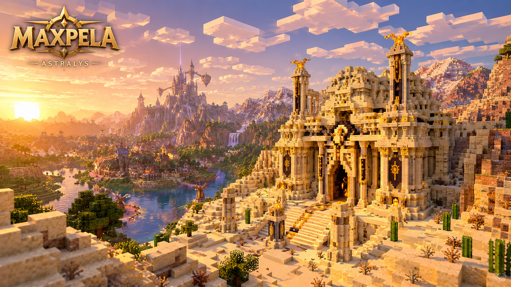

Monde ouvert
Des régions, villages, ruines, chemins et lieux oubliés à découvrir. Certains secrets ne seront accessibles qu'après avoir obtenu certains objets.
MINECRAFT JAVA EDITION · 26.3
Bienvenue à Astralys. Explorez un monde ouvert, découvrez d'anciens donjons et rassemblez les fragments capables de rouvrir un mystérieux portail vers le Nether.
L'AVENTURE
Un monde construit pour être exploré, découvert et raconté.
Des régions, villages, ruines, chemins et lieux oubliés à découvrir. Certains secrets ne seront accessibles qu'après avoir obtenu certains objets.
Chaque donjon possède son identité, ses énigmes, ses combats, ses récompenses et sa Pierre d'Obsidienne.
Une histoire mystérieuse vous mènera progressivement vers un portail que personne ne devrait peut-être rouvrir.
Les récompenses obtenues dans les donjons permettent progressivement d'explorer de nouvelles parties du monde.
LE LORE
À Astralys, le joueur commence loin des grandes légendes : dans une maison chaleureuse, au cœur du village qui devient son foyer et le point de départ de son aventure. C'est là qu'il rencontre Aldren, un ancien bibliothécaire qui lui remet un livre lié à une histoire que beaucoup prennent pour un simple conte.
Cette légende parle d'un héros appelé à réunir les fragments capables d'ouvrir un mystérieux portail vers le Nether. Des héros du passé auraient enfermé dans cet autre monde une menace extrêmement dangereuse. Pour empêcher que le portail soit rouvert, les fragments furent séparés puis cachés.
Six anciens donjons furent construits ou protégés par des gardiens liés aux héros. Chacun abrite une Pierre d'Obsidienne : il en existe donc six, une par donjon. Les réunir est au cœur de la progression et conduit peu à peu le joueur vers le mystère du portail et la vérité sur son ancienne fermeture.
La plupart des habitants ne voient dans cette histoire qu'une légende. Quelques chercheurs continuent pourtant d'en chercher les preuves. Au fil de son voyage depuis Astralys, le joueur découvre des traces laissées par les anciens héros et comprend qu'il pourrait être le héros annoncé par le récit.
Six donjons. Six Pierres d'Obsidienne. Une légende qui semble attendre son prochain héros.
LES FRAGMENTS SONT CACHÉS
Dans l'ordre de l'aventure, chaque donjon protège sa Pierre d'Obsidienne.
COMMENCER L'AVENTURE
Retrouvez ici tous les fichiers officiels nécessaires pour jouer.
Minecraft Java Edition 26.3
La première version officielle sera publiée ici.Retrouvez ici les mods nécessaires au fonctionnement de MaxPela, avec leurs versions exactes.
⚙️ VOIR LES MODSUne configuration graphique recommandée sera proposée pour renforcer l'ambiance d'Astralys.
✨ VOIR LES SHADERSDes modèles, sons et animations pour personnaliser ton aventure, avec les crédits des créateurs.
🧰 VOIR LES PACKSTéléchargez les fichiers officiels.
Installez Minecraft Java Edition 26.3.
Placez la carte dans votre dossier
saves.
Lancez le jeu et commencez votre aventure à Astralys.
ACTUALITÉS
Le point de départ de l'aventure prend forme. Astralys sera le premier lieu auquel le joueur devra s'attacher.
Lire le devlog →Lore, chronologie, monde, donjons et systèmes : découvrez les grandes étapes du Chapitre I.
Voir la roadmap →Une première image mystérieuse sera bientôt révélée.
Voir les médias →EXPLORATION
Six lieux à explorer, six étapes de l'aventure MaxPela.
Une ancienne tour de pierre, première étape de l'aventure.
Récompense connue : 🏹 ArcUn donjon situé dans la jungle.
Informations à venirUn donjon au cœur de la mangrove.
Informations à venirUn donjon dans les étendues désertiques.
Informations à venirUn donjon dans les montagnes glacées du Nord.
Informations à venirUn donjon dans les profondeurs souterraines.
Informations à venirIMAGES DU PROJET
Un premier regard sur les lieux et les ambiances de l'aventure.
Des lumières d'Astralys aux secrets enfouis sous la terre, découvre les premiers visuels de MaxPela.
Explorer la galerie
BANDE-ANNONCE EN PRÉPARATIONVisuels issus des ressources du projet MaxPela.
MaxPela se construit pas à pas. Rejoignez la communauté pour suivre le développement, échanger vos théories et découvrir les nouvelles étapes du projet.
Serveur officiel MaxPela · Ouvert dans un nouvel onglet